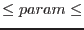

| Parameter | Mand | Type | Default | Constraints |
| boxlistset | yes | filename | eboxlist.fits | |
Name of eboxdetect source list
|
| imageset | yes | filename | image.fits | |
Names of input EPIC fits images
|
| bkgimageset | yes | filename | bkgimage.fits | |
Name of output spline background map
|
| fitmethod | no | string | spline | spline|model|smooth |
Fitting method:
spline fit, 2-component background model, or adaptive smoothing.
|
| expimageset | no | filename | expimage.fits | |
Name of input exposure map
|
| expimageset2 | no | filename | expimage.fits | |
Name of second input exposure map for option
``fitmethod=model''
|
| detmaskset | no | filename | detmask.fits | |
Name of input detection mask
|
| scut | no | float | 0.01 | [0.0  10.0] |
Source cut-out flux level; [counts/arcsec]
|
| idband | no | integer | 1 | [0 9] |
Band id from eboxdetect source list
|
| mlmin | no | float | 1.0 | [0.0 50.0] |
Minimum single band detection likelihood for sources to be cut out
|
| nsplinenodes | no | integer | 16 | [10 20] |
Number of spline nodes
|
| excesssigma | no | float | 4.0 | [1.0 6.0] |
Threshold for excesses sigmas with respect to background spline fit
|
| nfitrun | no | integer | 3 | [1 5] |
Number of iterations for
removal of excesses, nfitrun=1 means no removal
|
| withdetmask | no | boolean | true | |
Flag to use detection mask
|
| withexpimage | no | boolean | true | |
Flag to use exposure map
|
| withexpimage2 | no | boolean | true | |
Flag to use second exposure map for option ``fitmethod=model''
|
| snrmin | no | float | 30.0 | [1.0 1000.0] |
Desired minimum
signal to noise ratio during adaptive smoothing
|
| smoothsigma | no | float | 6.0 | [0.0 100.0] |
Minimum width of
Gaussian smoothing kernel
|
| withcheese | no | boolean | false | |
Controls optional output of
photon image where sources have been masked out (socalled cheesed image)
|
| cheeseimageset | no | filename | cheese.fits | |
Name of diagnostic output cheesed image.
|
| withcheesemask | no | boolean | false | |
Controls optional output of
mask image, value=0 for masked areas, value=1 for valid image areas
|
| cheesemaskset | no | filename | cheesemask.fits | |
Name of diagnostic output cheese mask image.
|
| withootset | no | boolean | false | |
Flag to use event table to calculate background
due to out-of-time events.
|
| ooteventset | no | filename | events.fits | |
Name of photon event table used for background
due to out-time-events
|
| pimin | no | integer | 1 | [1param30000] |
Lower PI channel limits of input images.
|
| pimax | no | integer | 30000 | [1param30000] |
Upper PI channel limits of input images.
|
| Parameter | Mand | Type | Default | Constraints |